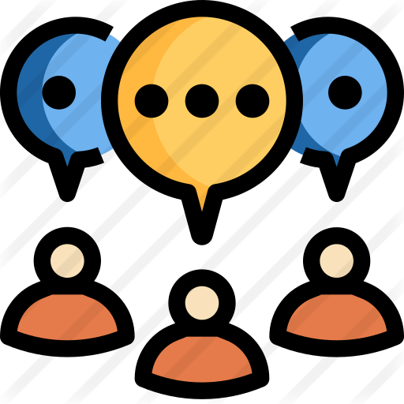

<mat-toolbar color="primary">
    <mat-toolbar-row>
        <button mat-icon-button *ngIf="sidenav && sidenav.mode === 'over'" (click)="sidenav.toggle()">
            <mat-icon *ngIf="!sidenav.opened">
                menu
            </mat-icon>
            <mat-icon *ngIf="sidenav.opened">
                close
            </mat-icon>
        </button>
        <div style="display: flex; width: 100%; justify-content: space-between; vertical-align: middle; align-items: center;">
            <h1 [routerLink]="['/']" style="font-size: larger; cursor: pointer;">SeeBiz</h1>
            <div style="display: flex;">
                <div (click)="setPersonalChat();" style="cursor: pointer; text-align: center; margin-left: 15px;">
                    
                    <h3 style="font-size: medium;">Chats</h3>
                </div>
                <div (click)="setGroupChat();" style="cursor: pointer; text-align: center; margin-left: 15px;">
                    
                    <h3 style="font-size: medium;">Groups</h3>
                </div>
                <div (click)="setNewChat();" style="cursor: pointer; text-align: center; margin-left: 15px;">
                    
                    <h3 style="font-size: medium;">Compose</h3>
                </div>
            </div>

            <!-- <span class="menu-spacer"></span> -->
            <!-- <mat-icon matTooltip="Chats" style="cursor: pointer; color: white;" [routerLink]="['/chat']"> home </mat-icon> -->
        </div>
    </mat-toolbar-row>
</mat-toolbar>